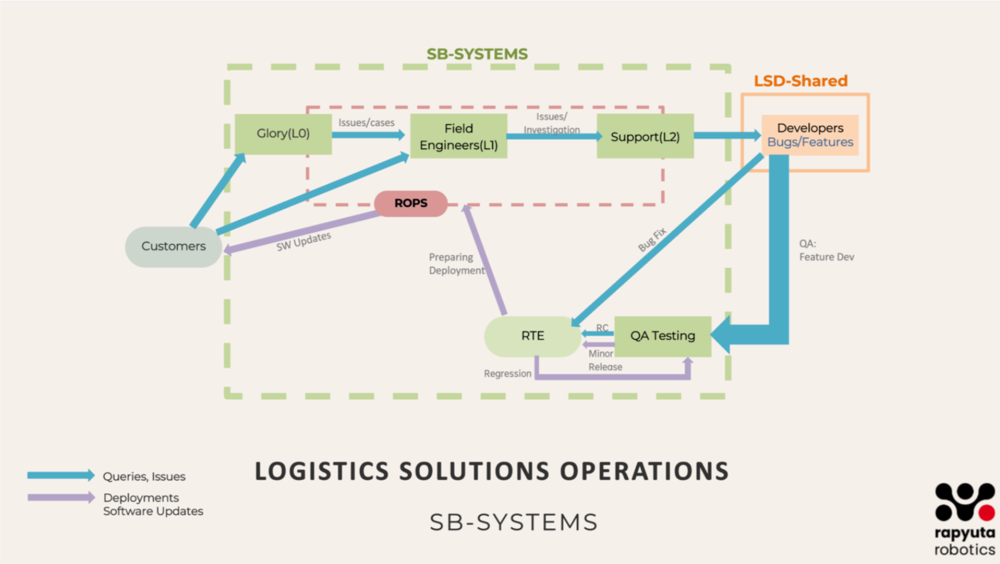

Introduction
This book defines the essential processes, tools, and best practices that empower teams to collaborate seamlessly, drive efficiency, and scale with confidence. This book is designed to:
Standardize Processes: Define clear workflows for each squad to ensure consistency.
Improve Collaboration: Highlight inter-team dependencies and best practices for smooth integration.
Enhance Knowledge Sharing: Provide in-depth technical and process documentation for current and future team members.
Optimize Performance: Define measurable KPIs and continuous improvement strategies.
Whether you’re an existing team member or a Fresher to Systems Team, this book will help you navigate the System Excellence framework and contribute effectively.
SB- Systems Architecture Overview
{kind=link}
Customers will raise queries and report issues encountered during daily product usage. These requests are directed to either the Glory team or Field Engineers through issue tickets in Azure, as detailed in this document.
Once a ticket is raised, the Support Team will review and categorize it into appropriate task types, such as issues/cases, bugs, or feature requests, ensuring a structured approach to resolution.
The Support Team will handle and resolve general issues/cases. However, bugs and feature requests will be escalated by creating tickets for the Development Team, ensuring they are addressed systematically and integrated into the development pipeline.
The Development Team will work on fixing reported bugs, updating the software, and implementing new features. Once the development is complete, the updated software will be sent to the QA Team for thorough testing to ensure functionality, stability, and compliance with requirements.
Once the QA Team has tested and validated the updates, the release will be handed over to the RTE (Release Train Engineer), who will ensure proper alignment and readiness for deployment.
If any issues/cases are identified during this stage, the changes will go through the necessary iteration loop for fixes and retesting. Once cleared, the final release will be deployed by the ROPS Team or Field Engineers, ensuring a smooth rollout to production.
All necessary process documents detailing this overall flow are provided below. These documents explain:
Why each process is necessary
How each process is executed
Which tools are used to achieve seamless implementation
Here’s a refined, structured guide integrating your notes into a comprehensive L2 to Dev Team Process Flow: